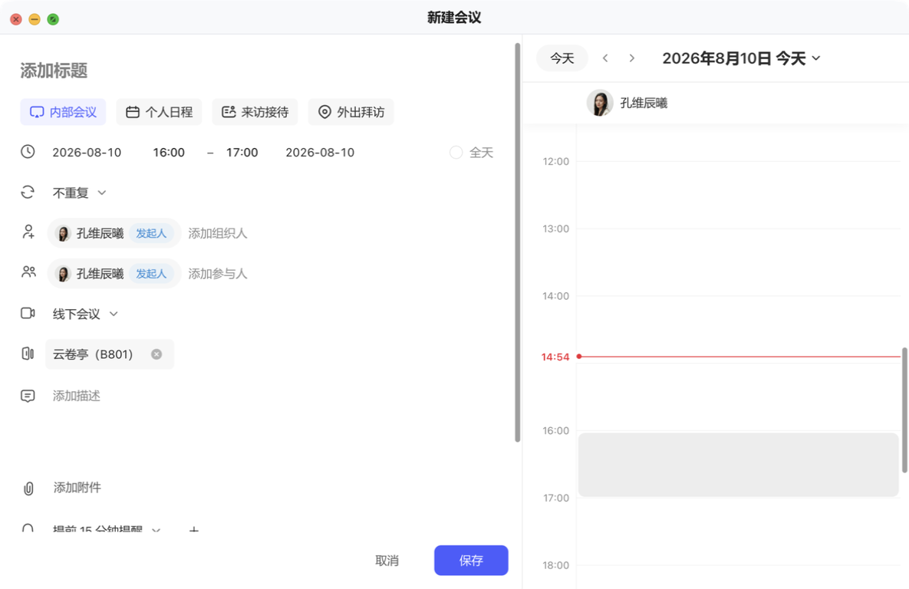
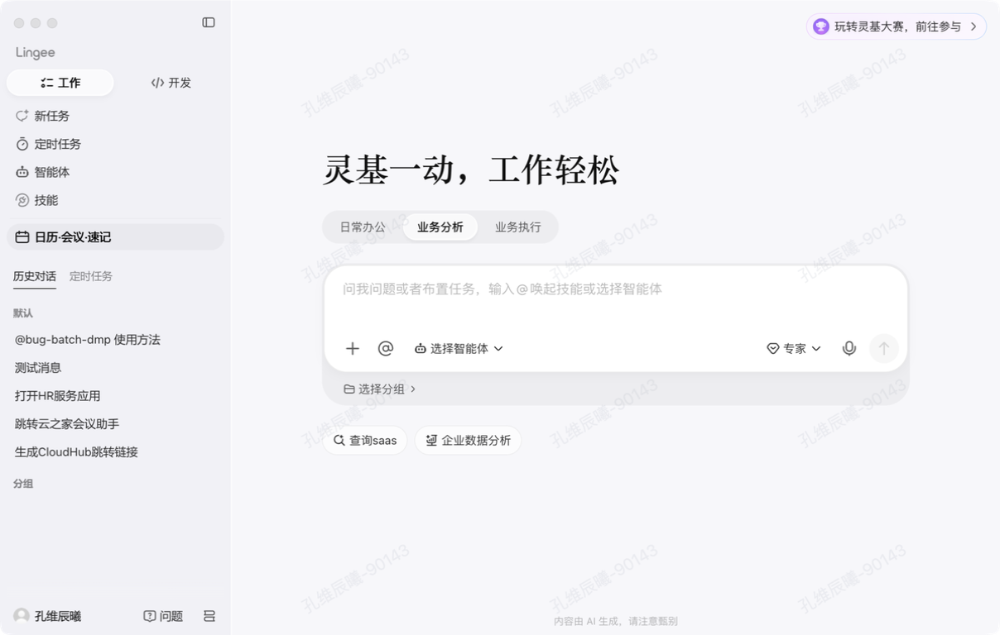

金蝶灵基 v0.1.3 — 修复后回归走查
评分变化总览
| 指标 | v0.1.2（上次） | v0.1.3（本次） | 变化 |
|---|---|---|---|
| 颜色 Token 覆盖率 | 80.9% | 89.3% | +8.4% |
| Token 使用次数 | 2,405 | 4,729 | +96% |
| 硬编码色值 | 522 | 521 | -1 |
| SVG 图标填色 | 375 | 322 | -53 |
| 圆角偏差 | 96 | 109 | +13 |
| 字号偏差 | 111 | 122 | +11 |
| 会议室走查评分 | 62 分 / C | 待详细评估 | — |
| 对话走查评分 | 71 分 / B | 待详细评估 | — |
Token 扫描对比
颜色 Token
| 分类 | v0.1.2 | v0.1.3 | 变化 |
|---|---|---|---|
Token 用法 var(--lg-*) | 2,267 | 4,603 | +103% |
| 硬编码色值 | 522 | 521 | -1 |
| SVG 填色 | 375 | 322 | -53 |
| Tailwind arbitrary | 13 | 33 | +20 |
| 覆盖率 | 80.9% (D) | 89.3% (D) | +8.4% |
圆角 & 字号
| 分类 | v0.1.2 | v0.1.3 | 变化 |
|---|---|---|---|
| 圆角偏差 | 96 | 109 | +13 |
| 圆角匹配 Token 但未用变量 | 289 | 310 | +21 |
| 字号偏差 | 111 | 122 | +11 |
| 字号匹配 Token 但未用变量 | 357 | 367 | +10 |
其他 Token
| 分类 | v0.1.2 | v0.1.3 | 变化 |
|---|---|---|---|
| Shadow Token | 56 | 66 | +10 |
| Transition Token | 82 | 60 | -22 |
UI 截图对比
会议室预订页面

v0.1.3 会议室列表（默认窗口）

v0.1.3 会议室列表（窄窗口）
观察到的变化
| 上次发现的问题 | v0.1.3 状态 |
|---|---|
| 日期选择器样式不统一 | ✅ 已改善 — 日期/时间选择器统一使用图标+文字样式 |
| 区域下拉选项样式 | ✅ 已改善 — 筛选区域整合为更紧凑的下拉样式 |
| Segment 控件不一致 | ✅ 已改善 — "当前时间段可用" 药丸按钮样式统一 |
| 卡片信息层级不清 | ✅ 已改善 — 每张卡片清晰展示名称、容量、位置、预订按钮 |
| 窄窗口文本截断 | ⚠️ 仍存在 — 窄窗口下卡片内容挤压，部分文字截断 |
| 搜索框 focus 状态 | ⚠️ 未测试 — 需进一步交互验证 |
新建会议弹窗

v0.1.3 新建会议弹窗
新建会议弹窗结构清晰：左侧表单（时间、会议室、发起人、参与人、会议类型、提醒），右侧当天时间轴。表单间距合理，按钮样式统一。
对话功能页面

v0.1.3 对话首页

v0.1.3 对话详情
观察到的变化
| 上次发现的问题 | v0.1.3 状态 |
|---|---|
| 输入框 focus 状态不明显 | ✅ 已改善 — 输入框样式更精致，含 @ 唤起、智能体选择、语音入口 |
| 消息气泡间距不一致 | ✅ 已改善 — 消息区域间距统一，时间戳清晰 |
| 操作按钮（分享/点赞/复制/删除） | ✅ 已改善 — 底部操作栏图标排列整齐 |
| 右键菜单定位 | ⚠️ 未测试 — 需进一步交互验证 |
| 加载态展示 | ⚠️ 未测试 — 需触发加载场景验证 |
| 空状态设计 | ⚠️ 未测试 — 需清空对话验证 |
总结
明确改善：
- 颜色 Token 覆盖率从 80.9% 提升到 89.3%，Token 使用量翻倍
- 会议室页面：日期选择器、筛选区域、卡片信息层级明显改善
- 对话页面：输入框、消息气泡、操作按钮样式更统一精致
- SVG 图标填色减少 53 处
仍需关注：
- 窄窗口下会议室卡片内容截断问题仍存在
- 圆角偏差从 96 增加到 109（+13），字号偏差从 111 增加到 122（+11）
- Tailwind arbitrary value 从 13 增加到 33（+20）
- Transition Token 使用减少 22 次
待深入验证：
- 右键菜单、加载态、空状态等交互细节
- 暗黑模式支持
- 无障碍（aria 属性、键盘导航）
- 跨页面组件一致性